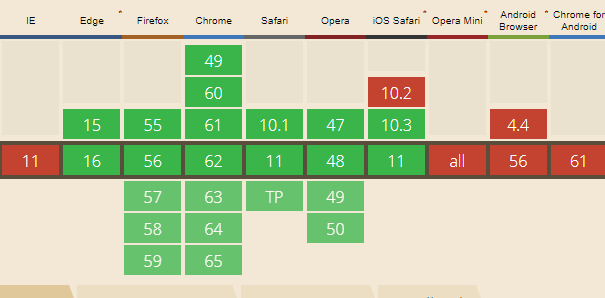

These monthes, I have learned something about Web VR. And it's really awesome, but also complex. And I find a small problem that when we want to see a 3d object on the webpage, we move the mouse to rotate the image, however, if the mouse reaches to the screen boundary, we have to stop move, and lift the mouse in order to slide it again. It's really a problem for web VR or some web 3d games. But how to solve it? Can we let the mouse ignore the screen boundary? Of course!
The Pointer Lock API gives us a chance to lock our mouse in order to achieve this effect. It has two important methods:
(1) element.requestPointerLock()
(2) Document.exitPointerLock()
And two important events:
(1) pointerlockchange
(2) pointerlockerror
When we want to achieve a function that when we click an element on the webpage, the mouse will be locked and disappear, and if we click again, the mouse will unlock and appear. The example is like below:
var obj = document.querySelector('.ele');
obj.addEventListener('click', function () {
obj.requestPointerLock();
});
document.addEventListener('click', function () {
if (document.pointerLockElement === obj) {
document.exitPointerLock();
}
});
You can click the picture below, you will find your mouse disappear, your mouse will show when you click again.
Ok, if you want to rotate the "DIV", you must use some js function:
First, we should use "mousemove" event of document, it has two attributes: event.mousementX, event.mousementY. They mean the end point of the last movement is the starting point to calculate the distance of the movement of the mouse.
Second, we will record every step's distance, and accomulate the sum distances in variables moveX and moveY.
Third, we can caculate the rotate parameters based on the moveX and moveY.
var obj2 = document.querySelector(".test_div2");
var moveX = 0, moveY = 0;
var rotate3D = function (event) {
moveX = moveX + event.movementX;
moveY = moveY + event.movementY;
obj2.style.transform = 'rotateX(' + moveY + 'deg) rotateY(' + moveX + 'deg)';
};
obj2.addEventListener('click', function () {
obj2.requestPointerLock();
});
document.addEventListener('click', function () {
if (document.pointerLockElement === obj2) {
document.exitPointerLock();
}
});
document.addEventListener('pointerlockchange', function () {
if (document.pointerLockElement === obj2) {
document.addEventListener("mousemove", rotate3D, false);
} else {
document.removeEventListener("mousemove", rotate3D, false);
}
}, false);
The effect is like below, you can click the "DIV", and rotate it by sliding your mouse, no matter how long it is! If you want to exit the rotate, just click your mouse again.
Is it cool? Especially when you use this skill or API in the web VR or web 3d games, it will improve the user experience and make your function effect more perfect.
And finally, let's see its compatibility, it's not a new API, but before IOS10.3 and 11, the safari browser cannot support this API, so I just wait to introduce it until now. What's more, because it is just a mouse API, so it don't need be supported by mobile devices.

(That's all)